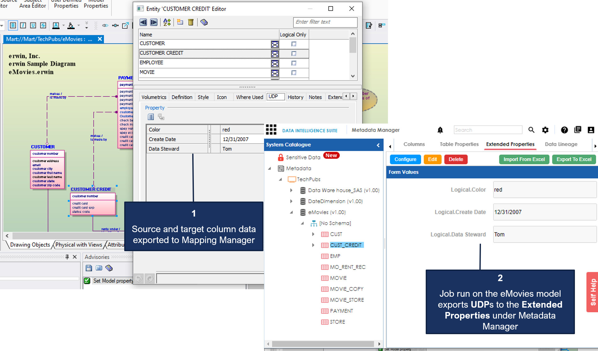

The job runs according to the schedule and exports data model to Metadata Manager and naming standards to Business Glossary Manager.
Database connection parameters such as DBMS Name/DSN, IP Address/Host Name, and Port are stored in environment details.
Also, the UDPs in the model are exported to the Extended Properties tab in Metadata Manager.

The Run Job option immediately runs a job. This option works only if the selected job is a recurring job in the scheduled state.
The Manage Job option lets you modify an existing scheduled job. If you modify a job:
Recurring jobs run based on the Job Interval you set while scheduling them. If the models selected in the job have not changed between job intervals, the job still runs according to the schedule. However, no data is exported to erwin DI Suite.
If a new model is added to an existing folder on which a recurring job has been scheduled, DM Connect for DI auto-syncs it to the job. The new model in included in the job automatically, when the job runs next.